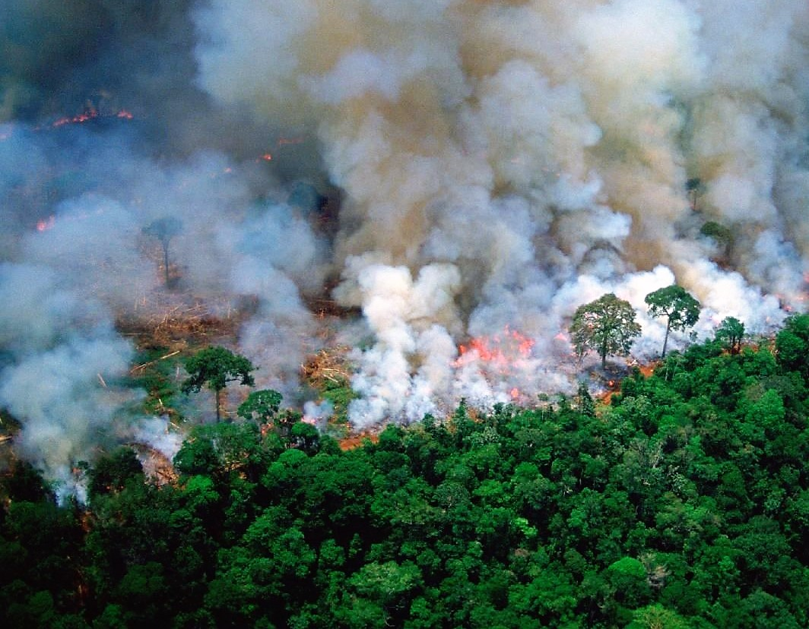

L'Amazonie en flammes. Credit : RainForestTrust, Instagram.
Le 24 août 2019
Les incendies en Amazonie ne sont pas qu'un accident :
99% de ces feux de forêts sont déclenchés volontairement pour libérer des parcelles dédiées à l’élevage. De grands projets d’agro-business et de petites fermes auraient profité de la saison sèche pour faire place nette selon Alberto Setzer, chercheur à l’INPE - le centre de recherches spatiales brézilien.
En réaction aux incendies
Des centaines de pompiers se sont engagés à la demande de l’association environnementale brésilienne IBAMA pour éteindre les feux devenus incontrôlables.
Mais ils gagnent encore du terrain.
Alerté par les flammes, le monde ne tarde pas à réagir. Politiques, citoyens, célébrités, gouvernements... Tous réclament les grands moyens pour mettre fin aux incendies. La France et l’Irlande se disent prêts à exercer leur droit de veto contre un accord entre l’Union Européenne et Mercosur – le bloc économique et politique de l'Amérique du Sud – à moins que le Brésil ne se décide à réagir.
Sous la pression internationale, le président brésilien Bolsonaro a donc permis le
déploiement de l’armée pour maîtriser les incendies. Il ajoute même qu’il est de notre devoir de « protéger la forêt, de combattre la déforestation illégale et toute activité criminelle qui menacerait l’Amazonie ».
Le coupable au bûcher

La déforestation amazonienne. Credit : NASA.
Bolsonaro nie totalement ses responsabilités dans le drame actuel.
C’est pourtant lui qui a coupé le budget alloué à la protection de la forêt par les agences nationales.
Le président brésilien encourage la déforestation dans une attitude « pro-business » favorable à l’industrie du bois et à l’élevage.
A ceux qui l’accusent d’avoir permis ces feux de forêt, Bolsonaro répond que nous sommes dans une saison chaude, sèche et venteuse au cours de laquelle des incendies se produisent chaque année en Amazonie. Oui, mais avec une augmentation de 85% cette année par rapport à l’année précédente !
Ah ? Bolsonaro s’empresse de virer le directeur de l’agence de recherches spatiales qui révèle ces chiffres embarrassants. Ils ne sont, selon lui, qu’un tissu de mensonge.
L’irresponsabilité du président brésilien est risible un instant, mais surtout affligeante. Sa négligeance consume l’Amazonie à vitesse grand V.
Un terrain de foot et demi est déforesté chaque minute en Juin 2019. Et avec la forêt, des animaux sont brûlés vifs.
Un trésor de biodiversité
L’Amazonie est notre plus grande forêt tropicale, et comme toutes ces forêts, elle abrite une incroyable diversité d’espèces animales et végétales : des mammifères, des oiseaux, des amphibiens et des reptiles, dont 75% sont endémiques à l’Amazonie.
L'Amazonie représente à elle seule
10% de la biodiversité planétaire !
Or son exploitation a déjà détruit 20% de cette richesse,
échangée contre des mines, des champs, des barrages et des routes, selon le WWF.

Le fleuve Amazone. Credit : Wikipedia.
Un acteur climatique
Les plantes et tous les organismes qui réalisent
la photosynthèse pour se développer
puisent le CO2 atmosphérique et libèrent en échange de l'oxygène sous forme d'O2.
Une nouvelle forêt pousse vite et relâche donc beaucoup d'oxygène.
Mais les plantes réalisent aussi la réaction inverse pour obtenir de l'énergie,
la respiration :
elles inspirent du CO2 et expirent de l'O2, comme nous.
On ne peut donc pas vraiment dire que l'Amazonie soit le poumon de la planète.
Bien sûr, cette immense forêt a contribué à l'accumulation d'oxygène dans l'atmosphère jusqu'à la concentration actuelle, mais sur des millénaires de pousse !
Si nous brûlons toute l'Amazonie, nous n'allons pas perdre 20% de l'oxygène instantanémment.
En revanche, le climat est bel est bien chamboulé.
Tout d'abord parce que la forêt émet des nuées d'humidité qui permettent de réguler les pluies à plus ou moins grande échelle spatiale.
Mais aussi parce que l'Amazonie est pleine de vie et donc de matière carbonéee :
les êtres vivants sont principalement constitués de longues chaînes d'atome de carbone (C) auquelles on ajoute de l'oxygène (O) et de l'hydrogène (H).
La forêt est un réservoir de carbone qui, lorsqu'elle brûle, se désintègre en myriades de petite molécules de dioxyde de carbone.
Et tout ce CO2 s’accumule dans l’atmosphère qui, bien sûr, en manquait cruellement. Résultat :
l’effet de serre augmente encore et accélère le réchauffement climatique.
Les victimes
Je n'ai pas osé illustrer l'article d'animaux brûlés. Les images sont atroces.
Des singes, des loutres, des panthères enflammées...
Leur souffrance est intolérable. Nous brûlons leur maison : des forêts primaires qui ont mis des millénaires à se constituer.
Un fabuleux échaffaudage d'arbres, de lianes et de fleurs d'une folle diversité, des insectes loufoques et de dangereux serpents,
des oiseaux de paradis, de drôles de reptiles...
Partis en fumée.
Ce merveilleux environnement, pourtant hostile à l'homme, est aussi
la demeure de communautés autochtones qui se battent aujourd'hui
pour faire entendre leurs droits.
Inés Nenquimo, porte-parole de la communauté Waorani Credit : Amazon Frontlines.
Quels droits ? Le gouvernement les expulse comme de vulgaires rats des champs au temps de la moisson.
Des organisations se lèvent et portent la parole des indigènes.
Rendez-vous sur ce
site pour rencontrer les incroyables communautés de l'Amazonie et les soutenir.
Le drame est global. L'Amazonie brûle et dégage un nuage de fumée et de cendres qui assombrit l'air, crée d'étranges pluies noires au-dessus de Sao Paulo et diffuse
une pollution qui nous concerne tous.
A notre échelle
Des pistes d’action sont fournies par le reporteur Hugo Clément qui nous rappelle que les cultures de soja destinées à l’élevage sont l’une des principales causes de déforestation au Brésil. Chaque année,
la France importe 3,5 millions de tonnes de soja brésilien pour nourrir les poulets, porcs et bœufs français selon le WWF. Yann Arthus-Bertrand ironise :
A quoi bon faire la leçon au Brésil si les coopératives françaises continuent d'importer massivement de ce pays du soja issu de la déforestation, pour nourrir notre bétail ?
Le G7, qui réunit à Biarritz le Canada, la France, l’Allemagne, l’Italie, le Japon, le Royaume-Uni et les Etats-Unis, lance un appel à des
efforts collectifs de protection de la nature et de lutte contre le changement climatique. C’est bien joli. Et s’il proposait aussi de réduire l’élevage intensif et de relocaliser les cultures ?
Sources :
"Amazon fires: Bolsonaro deploys troops", sur CNN
Yann Arthus-Bertrand : «On a perdu le combat contre le changement climatique», dans Le Parisien
"Here's what to do if you're angry about the amazon rainforest fires", sur i-D
AmazonFrontlines
Twitter, @hugoclement